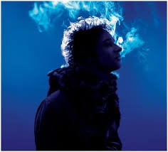
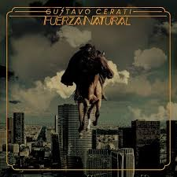
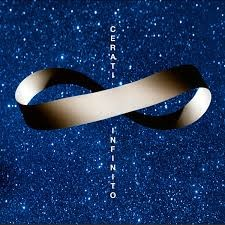

Discografía

Bocanada (1999)
Uno de los discos más aclamados de Cerati, marcando su evolución como solista con una mezcla de sonidos electrónicos y rock.
14 Episodios sinfónicos en vivo / Auditorio Nacional Ciudad de México / febrero (2002).
Gustavo Cerati: lanzan nuevo álbum póstumo del músico "14 Episodios Sinfónicos".

Fuerza Natural (2009)
Su último álbum de estudio, donde muestra su madurez artística y un enfoque hacia sonidos más orgánicos y líricos.

Cerati Infinito (2015).
Cerati Infinito es un álbum recopilatorio de Gustavo Cerati editado en CD+DVD.